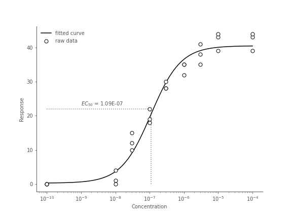
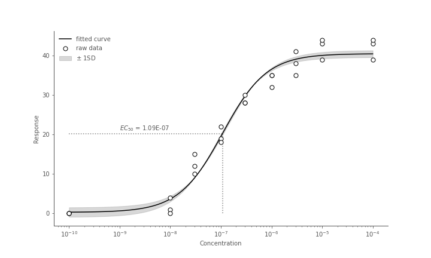
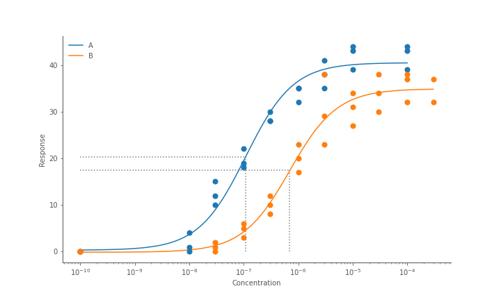

Fitting concentration response curves
Fitting dose or concentration response curves is a common but nuanced task. To do this in python
we can define the curve fitting function in numpy, and use scipy.optimize.curve_fit() to fit a curve to our data.
3 parameter curve
Concentration
import numpy as np
def hill_3_param(
x: np.ndarray, top: float, botton: float, ec50: float
) -> np.ndarray:
return bottom + x * (top - bottom) / (ec50 + x)
log concentrations
def hill_3_param(
x: np.ndarray, top: float, botton: float, log_ec50: float
) -> np.ndarray:
return bottom + (top - bottom) / (1 + 10**(log_ec50 - x))
4 parameter curve
Concentration
import numpy as np
def hill_4_param(
x: np.ndarray, top: float, bottom: float, ec50: float, hillslope: float
) -> np.ndarray:
numerator = bottom + (x**hillslope) * (top - bottom)
denominator = ((x**hillslope) + (ec50**hillslope))
return numerator / denominator
log concentrations
def hill_4_param(
x: np.ndarray, top: float, bottom: float, log_ec50: float, hillslope: float
) -> np.ndarray:
return bottom + (top - bottom) / (1 + 10**((log_ec50 - x) * hillslope))
Fitting the model
At it's simplest, assuming x is an array of concentrations and y is an array of
corresponding responses, we can run:
This returns popt, which are the fitted [top, bottom, ec50, hillslope (if 4 parameter)]
values for your model. These can be used directly such as the \(EC_{50}\), or used
with interpolated data to plot a curve.
pcov is the covariance of your parameter estimates which can be used to calculate
the standard deviation of your \(EC_{50}\) for instance.
Adjusting the curve fitting
You might find the curve fitting hasn't worked particularly well with the default
settings, in this case it often helps to adjust some parameters in scipy.optimize.curve_fit().
p0
p0 serves as the initial starting point for your model parameters. The closer
these are expected values, the easier the job the curve fitting algorithm will have.
If you don't specify starting points for p0, they will start as 1 for all values.
p0 = [100, 0, 1e-3] # starting point for [top, bottom, ec50] params
popt, pcov = scipy.optimize.curve_fit(hill_3_param, x, y, p0=p0)
bounds
You often have some idea if the parameters the curve fitting produces are
at all possible given your assay. For example a negative hill-slope, or a bottom
values less than 0. We can specify upper and lower bounds in the curve fitting
with the bounds argument. These should be fairly relaxed, but within
the realms of possibility.
p0 = [100, 0, 1e-3]
bounds = (
(0, 0, 0), # lower bounds for [top, bottom, ec50]
(300, 300, 1) # upper bounds for [top, bottom, ec50]
)
popt, pcov = scipy.optimize.curve_fit(hill_3_param, x, y, p0=p0, bounds=bounds)
If you want to specify bounds for some parameters but leave others boundless,
use -np.inf and np.inf.
E.g here we set upper and lower bounds for the top and bottom parameters,
but allow ec50 to be fit to any value.
bounds = (
(0, 0, -np.inf),
(300, 300, np.inf)
)
popt, pcov = scipy.optimize.curve_fit(hill_3_param, x, y, bounds=bounds)
Note
If you set bounds, you should be aware of the default values of
p0 being initialised as 1. If your bounds do not cover 1 then your model will
fail to fit. So it's probably wise to set values for p0 if you're also
setting bounds.
pcov and parameter uncertainty
The pcov object returned on scipy.optimize.curve_fit() is an n by n matrix
of estimated parameter covariances, where n is the number of parameters in your
model. We can use the diagonal of this matrix to get the estimated standard
deviation of our parameters.
Since our hill_3_param model has 3 parameters, p_err will now the variance
of those 3 parameters in the same order as their arguments in the original
function (top, bottom, ec50).
Plotting concentration response curves
Using example data from here, we'll fit and plot a 3 parameter concentration response curve.
Generating interpolated points
Given our parameters from our fitted model, we can now generate an estimated response value for any given concentration.
import numpy as np
import pandas as pd
from scipy.optimize import curve_fit
def hill_3_param(
x: np.ndarray, top: float, botton: float, ec50: float
) -> np.ndarray:
return bottom + x * (top - bottom) / (ec50 + x)
# read in example concentration response data
df = pd.read_csv("conc_response.csv").dropna()
df_a = df[df["drug"] == "A"]
conc = df_a["conc"].to_numpy()
response = df_a["response"].to_numpy()
popt, pcov = curve_fit(hill_3_param, x=con, y=response)
top, bottom, ec50 = popt
We now have our parameters of our 3 parameter model (top, bottom, ec50):
Now we generate 100 interpolated values between our minimum and maximum concentration values to plot a smoother curve.
x_interpolated = np.logspace(min(np.log10(conc)), max(np.log(conc)), 100)
y_interpolated = hill_3_param(x_interpolated, *popt)
Plotting with matplotlib
Now we can plot both the raw data points and the fitted curve in matplotlib.
plt.plot(x_interpolated, y_interpolated, label="fitted curve", color="black")
plt.scatter(
conc, response, label="raw data", color="black", facecolor="white", zorder=99
)
plt.vlines(x=ec50, ymin=0, ymax=top/2, linestyle="dotted", color="gray")
plt.hlines(y=top/2, xmin=min(conc), xmax=ec50, linestyle="dotted", color="gray")
plt.text(x=1e-9, y=23, s=f"$EC_{{50}} = {ec50:.2E}$")
plt.xlabel("Concentration")
plt.ylabel("Response")
plt.xscale("log")
plt.legend()

Plotting standard deviations with pcov
As mentioned in the curve fitting section we can get the standard deviations of
our curve parameters from the pcov matrix.
We can then plot this uncertainty on the curve by calculating 2 additional curves,
one with our parameters + standard deviation, and another - standard deviation.
Then we can use plt.fill_between() to fill the area between the upper and lower
bounded curves.
y_hat_upper = hill_3_param(
x_interpolated, top+p_err[0], bottom+p_err[1], ec50+p_err[2]
)
y_hat_lower = hill_3_param(
x_interpolated, top-p_err[0], bottom-p_err[1], ec50-p_err[2]
)
plt.plot(x_interpolated, y_interpolated, label="fitted curve", color="black")
plt.scatter(
conc, response, label="raw data", color="black", facecolor="white", zorder=99
)
plt.fill_between(
x_interpolated,
y1=y_hat_upper,
y2=y_hat_lower,
color="gray",
alpha=0.3,
label="$\pm$ 1SD"
)
plt.vlines(x=ec50, ymin=0, ymax=top/2, linestyle="dotted", color="gray")
plt.hlines(y=top/2, xmin=min(conc), xmax=ec50, linestyle="dotted", color="gray")
plt.text(x=1e-9, y=23, s=f"$EC_{{50}} = {ec50:.2E}$")
plt.xlabel("Concentration")
plt.ylabel("Response")
plt.xscale("log")
plt.legend()

Plotting multiple curves
If we're plotting multiple curves it's worth writing some functions so we don't have to repeat lots of curves for each drug.
Since our data is in the form of a dataframe, we can split by the drug column
and loop through the different drugs, calculating the curve fitting parameters and plot
each one in turn
from typing import NamedTuple
class Params(NamedTuple):
top: float
bottom: float
ec50: float
class ModelFit(NamedTuple):
x_raw: np.ndarray
y_raw: np.ndarray
x_interp: np.ndarray
y_fit: np.ndarray
params: Params
def fit_3_param_curve(df: pd.DataFrame) -> ModelFit:
x = df["conc"].to_numpy()
y = df["response"].to_numpy()
popt, pcov = curve_fit(hill3param, x, y)
x_interp = np.logspace(min(np.log10(x)), max(np.log10(x)), 100)
y_fit = hill3param(x_interp, *popt)
return ModelFit(x, y, x_interp, y_fit, Params(*popt))
def plot_3_param_curve(model_fit: ModelFit):
params = model_fit.params
plt.plot(model_fit.x_interp, model_fit.y_fit, label=name)
plt.scatter(model_fit.x_raw, model_fit.y_raw, s=50, zorder=999)
plt.vlines(
x=params.ec50, ymin=0, ymax=params.top/2, linestyle="dotted", color="gray"
)
plt.hlines(
y=params.top/2, xmin=min(x), xmax=params.ec50, linestyle="dotted", color="gray"
)
plt.figure(figsize=[10, 6])
for name, group in df.groupby("drug"):
model_fit = fit_3_param_curve(group)
plot_3_param_curve(model_fit)
plt.xlabel("Concentration")
plt.ylabel("Response")
plt.xscale("log")
plt.legend(title="Drug", loc="upper left")
